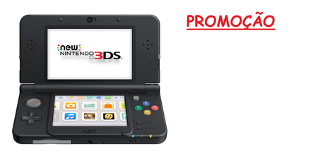

Days Gone, game exclusivo de PlayStation 4, recebeu uma data de lançamento oficial, após ter sido adiado no início de 2018. O jogo chega para o console da Sony em 22 de fevereiro de 2019.
Days Gone, que terá uma campanha de aproximadamente 30 horas de duração, colocará os jogadores no controle do caçador de recompensa Deacon St. John, que vive em um mundo aberto pós-apocalíptico. Veja mais.
